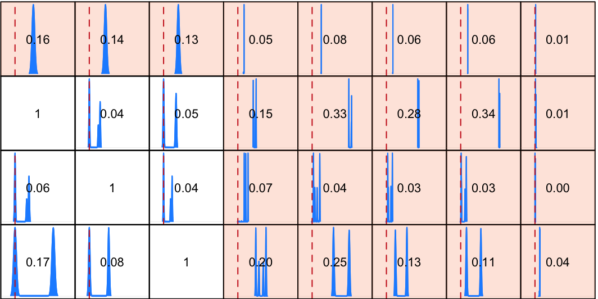
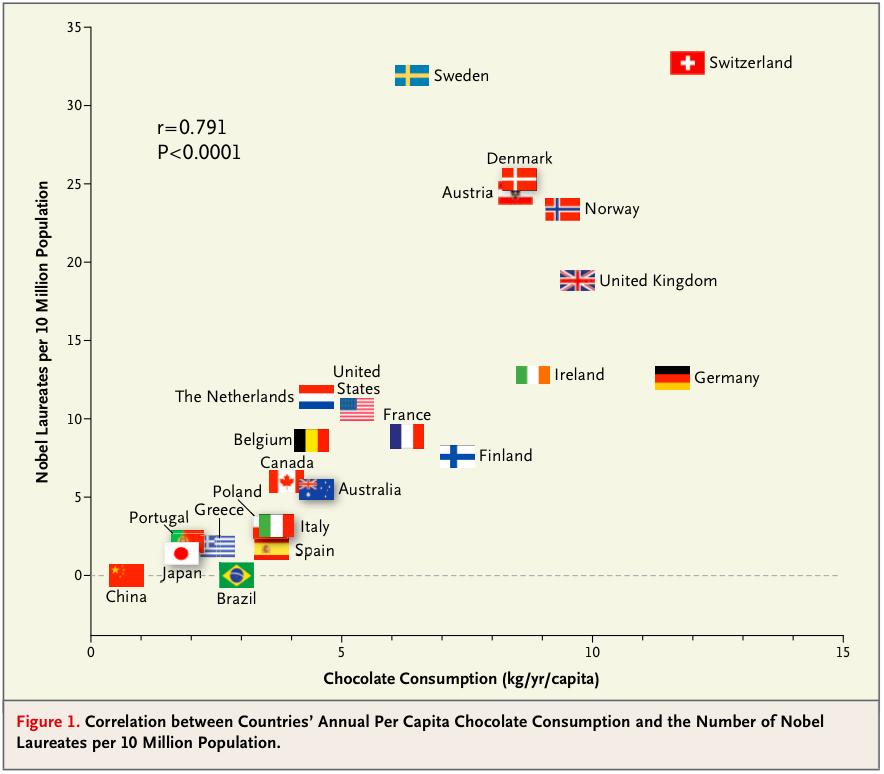

Research interests
Research
My research focus is on probabilistic graphical models and causal inference, and their potential to aid translational medicine and health sciences.


Series 2 bis: Follow up to ASA statement - two years on (2017)
Journal club
Figure from Messerli (2012) Chocolate Consumption, Cognitive Function, and Nobel Laureates, New England Journal of Medicine.